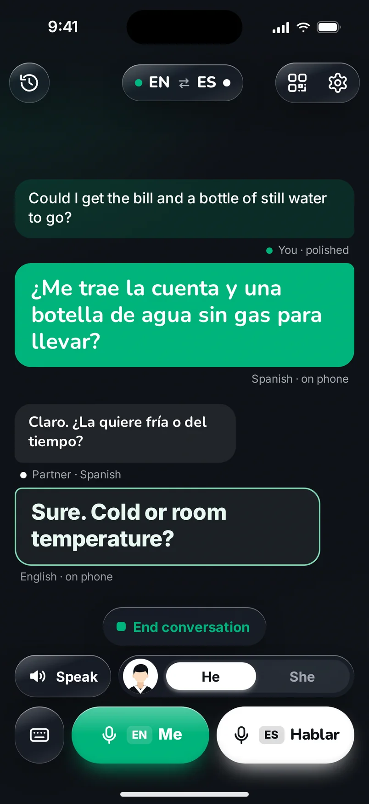
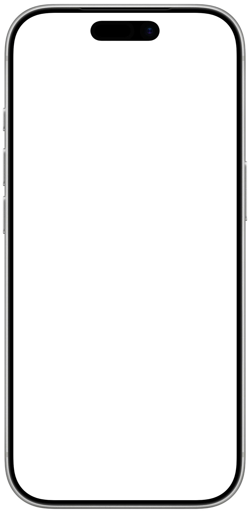
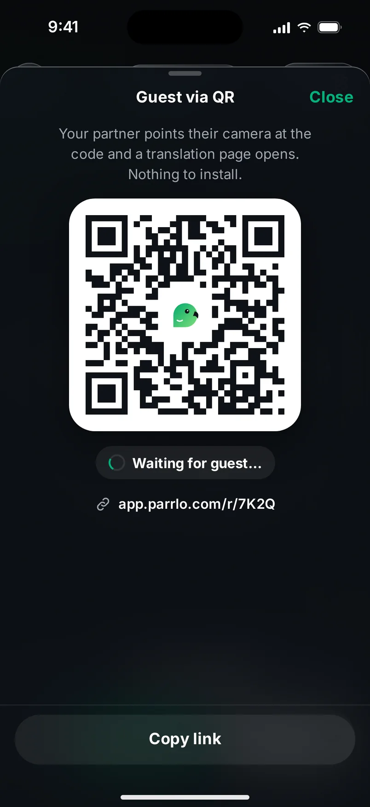
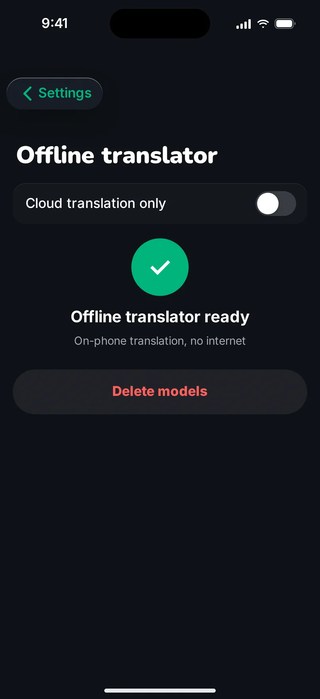

Say it however you can — sound flawless.
Parrlo first understands what you meant to say, and only then translates.
real example
We don’t translate words. We translate what you meant.
Real speech isn’t perfect. It has stumbles, repeats, words started and dropped halfway. Parrlo doesn’t repeat any of that in another language. It listens to the end, catches the meaning and writes down your thought the way someone fluent would say it: a clean, calm, correct sentence. And only that gets translated.
- The stumbles stay with you.
- The repeats vanish.
- The meaning arrives whole.
Examples from our internal tests (ES⇄RU). Translations in the site’s other languages are shown for reading.
Cadaqués, not “Cadenas”.
You say “a Cadenas”. Parrlo hears Cadaqués. It works out which place you mean and names it the way locals write and say it. The same goes for streets, towns, shops and stations: names arrive the way the other person will recognise them.
- Cadaqués
- Girona
- Cercanías
- Mercadona
Mockup
Your voice stays yours.
With your consent, Parrlo creates a copy of your voice: about two minutes of reading aloud is enough. You hear a sample, decide whether to keep it, and can delete your voice entirely at any time.
Talk the way that suits you.
- 1
Face to face.
The conversation goes in turns, as with an interpreter at your side. Parrlo remembers who you’re talking to and puts words in the right gender.
- 2
By QR code.
Show the other person the QR code on your screen. They point their camera and the conversation opens in their browser. Nothing to install, no sign-up.
- 3
In your messages.
A WhatsApp message in another language? Paste it into Parrlo or send it with “Share” and read it in yours. Write your reply however it comes: Parrlo turns it into correct text that you only have to send.



Mockup

Mockup
No signal. Still translating.
Normally translation happens in the cloud. But if you’ve downloaded the offline translator in Settings, Parrlo translates in the mountains and on the metro, right on your phone.
Your conversations are stored on your phone and your data stays under your control.
Speak the way you can.
Parrlo does the rest.
Pricing
Free€010 phrases a day
Hush€2.99 / moor €19.99 / year · For occasional talkers
Chatterbox€5.99 / moor €29.99 / year · For people who talk a lot
Start free. Cancel any time in the App Store.
FAQ
What does Parrlo do differently?
Parrlo first turns recognised speech into clean, literary text, fixing slips and repeats, and only then translates.
Does it work without internet?
Yes. It normally translates in the cloud and, with no connection, right on your phone if you've downloaded the offline translator in Settings.
Does the other person need to install the app?
No. They scan the QR code on your screen and the conversation opens in their browser.
Can I translate WhatsApp messages?
Yes, in Text mode: paste the message or send it with “Share”. Parrlo will translate your reply into correct Spanish.
How is my voice used?
Your voice is only created if you record a sample and give your consent. You can delete it at any time.
How much does it cost?
Free, 10 phrases a day. After that, Hush or Chatterbox, prices above. Questions: hello@parrlo.com.